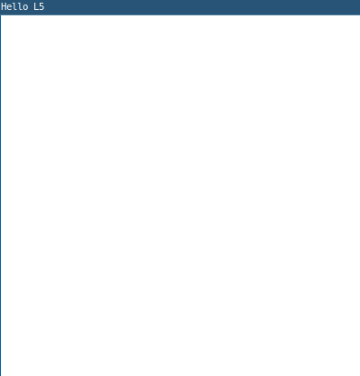

Welcome to L5

L5 is a fun, fast, cross-platform, and lightweight implementation of the Processing API in Lua. It is a free and open source coding library to make interactive artwork on the computer, aimed at artists, designers, and anyone that wants a flexible way to prototype art, games, toys, and other software experiments in code.
L5 is designed to work cross-platform, including on desktop, phone, and tablet. Beyond running fast on modern machines, L5 is optimized for older and lower-powered devices, minimizing resource usage to keep creative coding accessible to everyone. This helps with our goal of building resilient, long-lasting software projects. L5 is built in Lua, a robust but lightweight, long-running, lightning-fast, extensible language.
Example sketch

require("L5")
function setup()
size(400, 400)
windowTitle('Hello L5')
background('white')
noStroke()
describe('A basic drawing program in L5. A random fill color each mouse press.')
end
function mouseDragged()
-- Draw a circle that follows the mouse when held down
circle(mouseX, mouseY, 20)
end
function mousePressed()
-- Pick a random color on mouse press
fill(random(255),random(255),random(255))
end
Overview
L5 brings the familiar Processing creative coding environment to Lua, offering some of the best aspects of both Processing and p5.js with some twists of its own. But you don't need to know Processing already to get started with L5. L5 is built on top of the Love2D framework, and offers near-instant loading times and excellent performance while maintaining the intuitive API that makes Processing accessible to artists and designers. L5 is not an official implementation of Processing or the Processing Foundation. It is a community-created project.
Processing is not a single programming language, but an arts-centric system for learning, teaching, and making visual form with code. -Processing.py reference
Why Lua?
Lua is a versatile programming language known for its simplicity and efficiency. It has a straightforward easy-to-learn syntax, accessible for beginners, and it's efficient for experienced programmers as well.
The language is lightweight and fast. Despite its small size, there are lots of libraries and it is used in everything from Minecraft's ComputerCraft, to the handheld game device Playdate and the Pico-8 fantasy console, to complex game engines and configuration languages, as well as embedded in many hardware devices. Developing in Lua means your projects can work cross-platform relatively seamlessly, enhancing accessibility and reach.
Where Java undergoes regular major updates and JavaScript is a fast-evolving and changing language, Lua is a very slowly and intentionally developed language. It was originally created in Brazil in 1993, and still governed by a goal of including strong backward compatibility during its infrequent but focused updates. For this reason, Lua programs have a high chance of running for years, ideally with little or no changes.
Key Features of L5
- Lightning fast: Scripts, images, and audio load near-instantly
- Easy syntax: Easy to learn and consistent syntax.
- Minimal footprint: L5 (~6MB, from Love2D ~4.5MB + LuaJIT ~1.5MB) vs Processing (~500MB) vs p5.js (~1-4MB + browser ~250-355MB)
- Lighter impact: Runs on older hardware and devices.
- Cross-platform: Runs on Windows, macOS, Linux, iOS, Android, Raspberry Pi
- Synchronous execution: Code runs in predictable order, no async complexity
- Desktop-focused: Optimized for installations and standalone applications
- Resiliency: Underlying Lua language and Love2d frameworks change much slower than equivalent languages like JavaScript and Java
Important Notes
- 1-indexed: Lua arrays start at 1, not 0 (use
#to get array/string length) - 2D only: Currently limited to 2D graphics (3D libraries possible but not built-in)
- Tables everywhere: Lua uses tables for arrays, objects, and data structures
- OOP patterns: Check Lua documentation for object-oriented programming approaches
Getting Started
Ready to try L5? Check out the download page for an installation guide and the tutorials for easy ways to get started.
Community and Support
While L5 is a new project with growing documentation, it benefits from:
- The welcoming Processing community and their decade+ of resources
- Extensive Processing tutorials, books, and forums that translate well to L5
- The stable Lua and Love2D ecosystems
- Active development and community contributions
Note: As L5 is new, documentation and examples are still growing compared to the mature Processing ecosystem.
L5 aims to make creative coding accessible, fast, and fun while leveraging the power and simplicity of Lua and a commitment to making resilient, long-lasting tools.